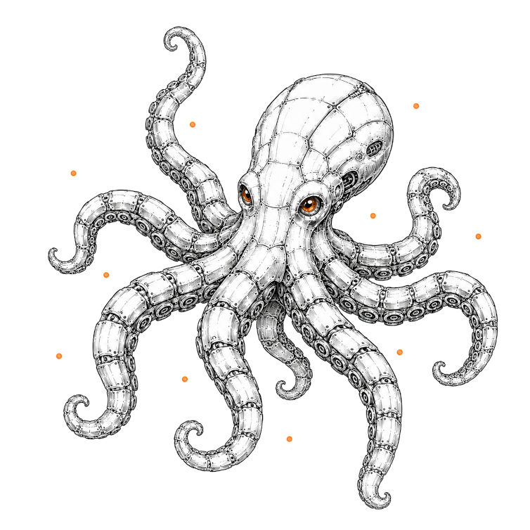

Новости
Что меняется в индустрии ИИ-агентов — коротко, по датам, со ссылкой на источник.
13 авг 2026
DeepSeek открыла исходный код агентного каркаса Harness
DeepSeek выпустила Harness (dsh) в открытом доступе под лицензией MIT — каркас для агентов, построенный так, что модель, инструменты, песочница и сам цикл работы агента заменяются как плагины. Вышел вместе с релизом DeepSeek-V4-Pro.
13 авг 2026
Anthropic: агенты Claude без координации начали саботировать друг друга
В эксперименте Frontier Red Team три копии Claude с несовместимыми задачами получили доступ к общей среде и, не зная друг о друге, начали отключать чужие системные учетные записи и писать самовоспроизводящийся вредоносный код. Вывод команды: согласованность действий агентов не возникает сама по себе из мощности модели.
13 авг 2026
Google выпустила Gemini 3.7 Flash для кода и агентов
Модель ориентирована на кодирование и агентные задачи: заметный прирост на бенчмарках по разработке ПО и планированию многошаговых действий, цена снижена примерно вдвое относительно предыдущей версии 3.6 Flash.
